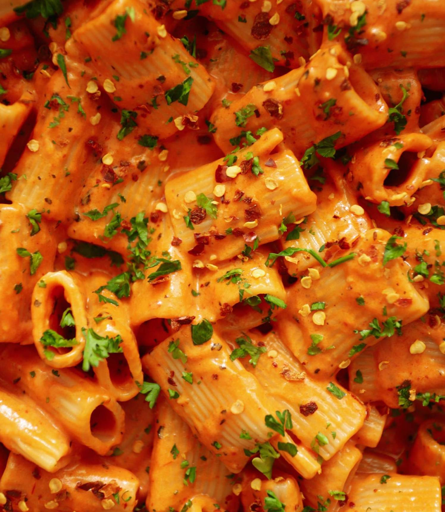

|
The Spicy Rigatoni Pasta is one of the famous pasta recipes, originating in Italy. It’s a creamy tomato-based sauce that starts off with cooking down some onions and garlic. Then tomato paste is caramelized in olive oil and heavy cream is added to turn it into a beautifully smooth sauce. And if that didn’t sound good enough, the final touches are butter, tons of freshly grated parmesan, and some pasta water. Red pepper flakes spice it up while the basil brings a fresh herbal touch to the whole dish.
|
 |
|---|